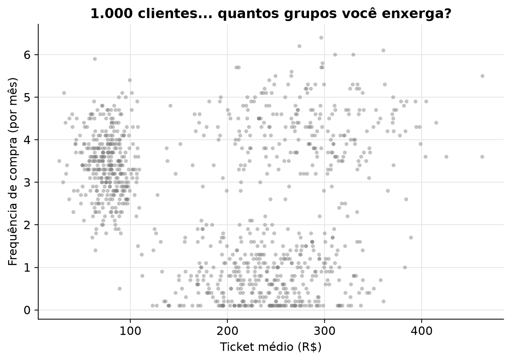
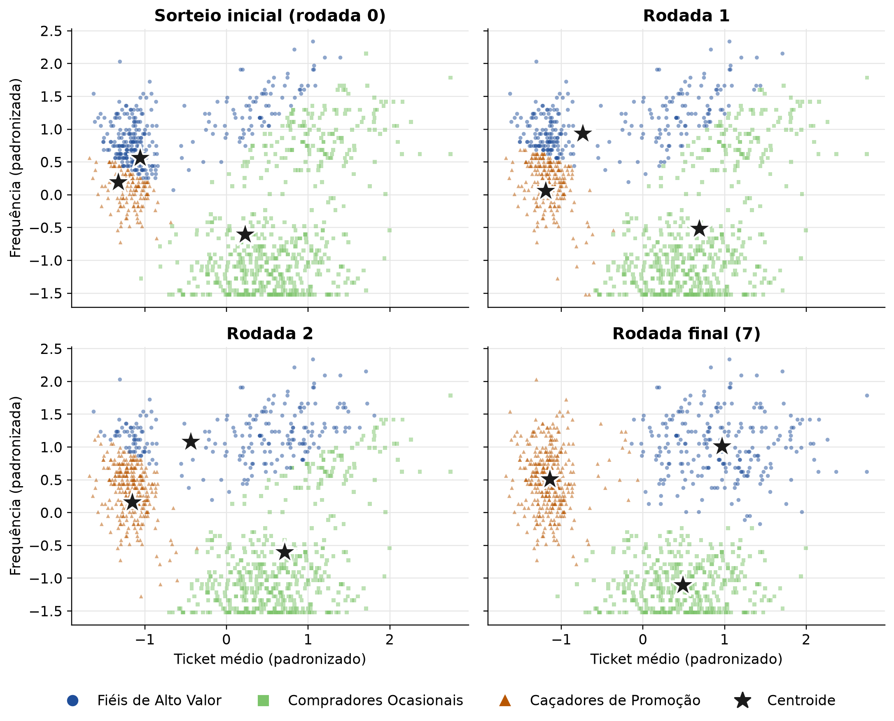
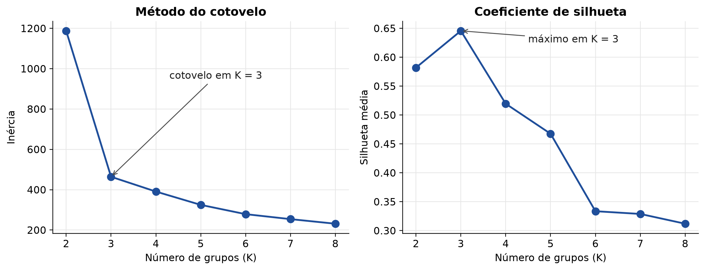
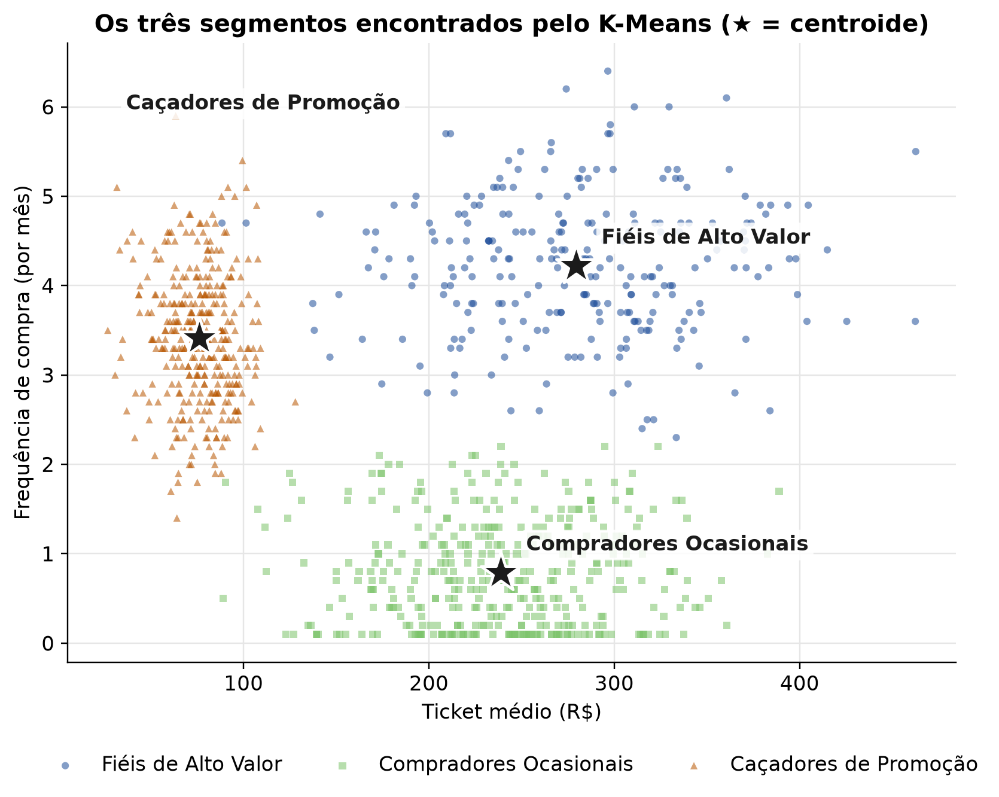
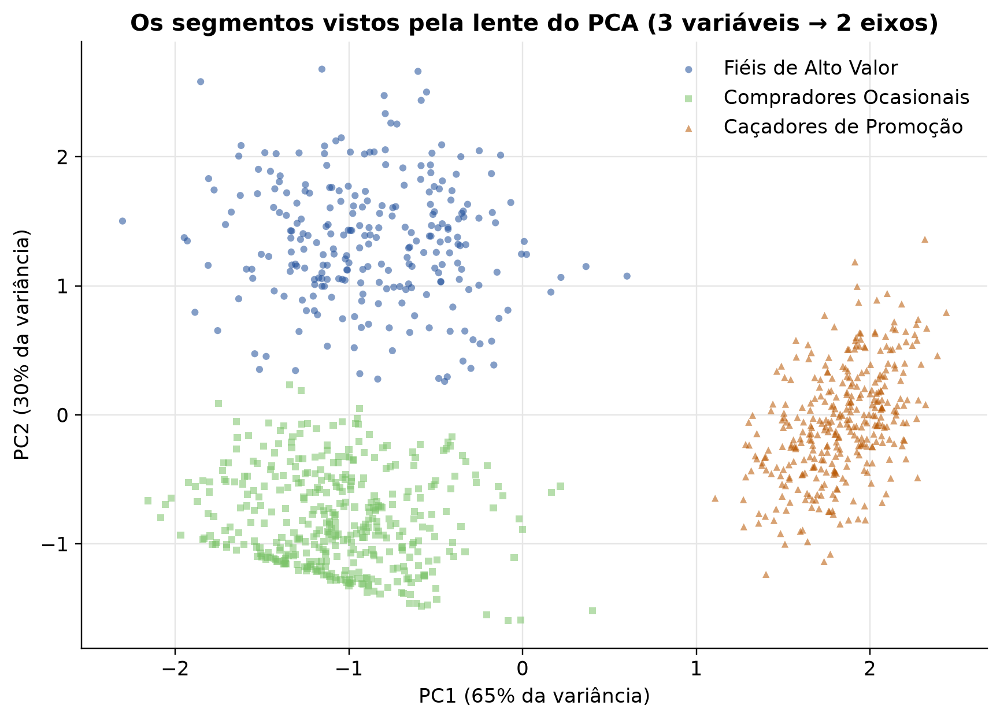
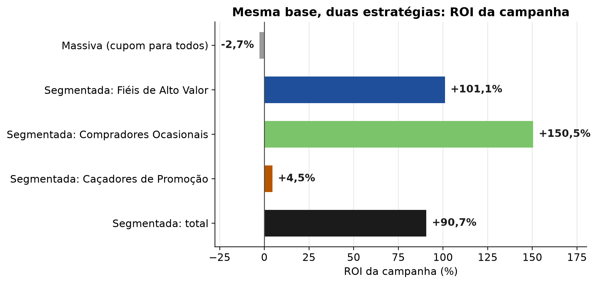

Pare de tratar clientes de forma igual: Passo a passo da Segmentação com K-Means e Python
python
k-means
clusterização
segmentação de mercado
machine learning
marketing analytics
alfabetização de dados
data literacy
Author
Jobenil Júnior
Published
October 31, 2026
Na semana passada, a sua loja virtual disparou o mesmo cupom de 10% de desconto para os 1.000 clientes da base. A cliente que compra toda semana e nem olha preço usou o cupom numa compra que faria de qualquer jeito: você só perdeu margem. O cliente que aparece de vez em quando nem abriu o e-mail. E o caçador de liquidação? Esse adorou, mas comprou só o item mais barato da vitrine. Mesmo cupom, três reações completamente diferentes. E se, em vez de falar com “a média dos clientes” (que, como veremos, não existe), você descobrisse automaticamente quais grupos de clientes se comportam de forma parecida? É exatamente isso que o K-Means faz, e hoje vamos rodá-lo do zero, em Python.
Lembra do post sobre PCA, aquele das consumidoras de beleza? Lá eu terminei prometendo que o próximo passo natural seria agrupar as clientes em perfis de compra com um algoritmo de segmentação. Promessa é dívida: chegou a hora do K-Means.
🧺 Organizando a feira sem etiquetas
Imagine que despejaram na sua mesa 1.000 frutas sem nenhuma etiqueta e pediram para você separá-las em três cestos. Você não sabe o nome de nenhuma delas, mas olha a cor, o tamanho, o peso… e vai juntando as parecidas. No final, um cesto tem coisas pequenas e vermelhas, outro tem coisas grandes e verdes, e o terceiro tem coisas compridas e amarelas. Ninguém te deu o gabarito: você só encontrou semelhanças.
Isso é o que chamamos de aprendizado não supervisionado. É bem diferente do que fizemos no post de previsão de churn, em que havia uma resposta conhecida (o aluno cancelou ou não) para o modelo aprender:
Supervisionado (ex.: regressão logística de churn)
Não supervisionado (K-Means)
Tem rótulo/resposta?
Sim (cancelou ou não)
Não
Pergunta
“O que vai acontecer com este cliente?”
“Quais clientes se parecem entre si?”
Saída
Probabilidade/previsão para cada cliente
O grupo (cluster) de cada cliente
Como avaliar
Acerto em dados novos (conjunto de teste)
Coesão e separação dos grupos + sentido para o negócio
No K-Means não existe gabarito. Quem decide se um agrupamento é bom é a combinação de métrica com bom senso de negócio.
🎯 O que é segmentação de mercado (e por que a “média do cliente” engana)
Segmentar é dividir a base de clientes em grupos que sejam parecidos por dentro e diferentes entre si, para que cada grupo receba a oferta, o canal e o orçamento certos. Quem trabalha com CRM provavelmente já ouviu falar da análise RFM (Recência, Frequência e Valor monetário). As variáveis que usaremos hoje seguem essa mesma lógica: com que frequência o cliente compra, quanto ele gasta e como ele compra.
O problema de tratar a base como um bloco único é que a média de uma base heterogênea descreve um cliente que não existe. Na base que vamos simular daqui a pouco, a frequência média é de cerca de 2,6 compras por mês. Parece um número útil, até você descobrir que os três grupos reais compram, em média, 4,2, 0,8 e 3,4 vezes por mês. Nenhum deles se parece com a “média”.
Falar com a média dos clientes é falar com ninguém.
⚙️ Como o K-Means funciona: 4 passos e um ciclo
O nome já entrega a ideia: K é o número de grupos que você quer, e Means (médias) é o que define o centro de cada grupo. O algoritmo é surpreendentemente simples:
Passo
O que acontece
Analogia
1. Escolher K
Você define quantos grupos quer
Quantos cestos colocar na mesa
2. Posicionar os centroides
K pontos iniciais viram os “centros provisórios” dos grupos
Fincar K bandeirinhas no mapa
3. Atribuir
Cada cliente vai para o centroide mais próximo (distância euclidiana)
Cada pessoa corre para a bandeirinha mais perto
4. Atualizar
Cada centroide se muda para a média dos clientes do seu grupo
A bandeirinha vai para o meio da turma
↻ Repetir 3 e 4
Até ninguém mais trocar de grupo
Até todo mundo ficar parado
Por trás desse ciclo, o K-Means está tentando minimizar uma única quantidade, a inércia (também chamada de WCSS, within-cluster sum of squares): a soma das distâncias ao quadrado de cada cliente até o centro do seu grupo.
Quanto menor a inércia, mais “apertadinhos” estão os grupos em torno dos seus centros.
O K-Means é só isso: “vá para o centro mais próximo” e “mude o centro para o meio do grupo”, repetido até ninguém mais se mexer.
Para ver o ciclo acontecendo de verdade, primeiro precisamos de dados.
🧪 Como são os nossos dados? 1.000 clientes de um e-commerce fictício
Vamos simular a base de clientes de uma loja virtual com três variáveis de comportamento:
frequencia_mensal: quantas compras o cliente faz, em média, por mês;
ticket_medio: quanto ele gasta, em média, por compra (R$);
pct_promocao: que fração das compras dele foi feita em liquidação (de 0 a 1).
Por trás dessas colunas, vamos esconder de propósito três perfis de cliente, os mesmos da ilustração lá de cima:
Perfil verdadeiro (escondido do algoritmo)
Clientes
Frequência mensal
Ticket médio
Compras em promoção
Fiéis de Alto Valor
250
~4,2 (toda semana)
~R$ 280
~10%
Compradores Ocasionais
400
~0,8
~R$ 240
~20%
Caçadores de Promoção
350
~3,4
~R$ 75
~80%
import numpy as npimport pandas as pdrng = np.random.default_rng(2026)# perfil: (nº de clientes, frequência mensal, ticket médio, proporção de compras em promoção)perfis = {"Fiéis de Alto Valor": (250, 4.2, 280, 0.10),"Compradores Ocasionais": (400, 0.8, 240, 0.20),"Caçadores de Promoção": (350, 3.4, 75, 0.80),}partes = []for nome, (n, freq, ticket, promo) in perfis.items(): partes.append(pd.DataFrame({"frequencia_mensal": np.clip(rng.normal(freq, 0.7, n), 0.1, None).round(1),"ticket_medio": np.clip(rng.normal(ticket, ticket *0.22, n), 20, None).round(2),"pct_promocao": rng.beta(promo *20, (1- promo) *20, n).round(2),"perfil_real": nome, # o "gabarito": NÃO entra no K-Means }))dados = (pd.concat(partes, ignore_index=True) .sample(frac=1, random_state=2026) # embaralha as linhas .reset_index(drop=True))variaveis = ["frequencia_mensal", "ticket_medio", "pct_promocao"]dados.head()
frequencia_mensal
ticket_medio
pct_promocao
perfil_real
0
4.1
223.27
0.04
Fiéis de Alto Valor
1
4.8
141.22
0.02
Fiéis de Alto Valor
2
0.6
257.03
0.30
Compradores Ocasionais
3
3.9
284.89
0.19
Fiéis de Alto Valor
4
4.7
371.54
0.04
Fiéis de Alto Valor
A grande vantagem didática de simular é que nós sabemos a qual perfil cada cliente pertence (coluna perfil_real), então dá para conferir no final se o K-Means reencontrou os grupos. Mas atenção: essa coluna nunca será mostrada ao algoritmo. Na vida real, a empresa só teria as três colunas de comportamento.
dados[variaveis].describe().round(2)
frequencia_mensal
ticket_medio
pct_promocao
count
1000.00
1000.00
1000.00
mean
2.58
192.05
0.38
std
1.63
98.62
0.32
min
0.10
26.74
0.00
25%
1.00
85.53
0.11
50%
2.90
211.79
0.21
75%
3.90
271.35
0.75
max
6.40
462.61
0.95
Repare na escala das variáveis: a frequência vai de 0,1 a pouco mais de 6, a proporção em promoção vai de 0 a 1, e o ticket passa dos R$ 400. Guarde essa observação, porque ela vai voltar para nos assombrar daqui a pouco.
Agora, veja a base do jeito que a empresa a enxerga: uma nuvem de pontos, sem cores, sem nomes.
import matplotlib.pyplot as pltplt.rcParams.update({"figure.dpi": 110,"axes.spines.top": False,"axes.spines.right": False,"axes.grid": True,"grid.color": "#E6E6E6","grid.linewidth": 0.8,"axes.axisbelow": True,"axes.titleweight": "bold","font.size": 11,})plt.figure(figsize=(7, 5))plt.scatter(dados["ticket_medio"], dados["frequencia_mensal"], s=14, alpha=0.45, color="#7A7A7A", edgecolor="none")plt.xlabel("Ticket médio (R$)")plt.ylabel("Frequência de compra (por mês)")plt.title("1.000 clientes... quantos grupos você enxerga?")plt.tight_layout()plt.show()

Olhando com atenção, dá até para desconfiar de alguns “montinhos”. Mas desconfiar não é segmentar. Vamos deixar o K-Means trabalhar.
🎬 O ciclo do K-Means em slow motion
Antes de usar a versão pronta do scikit-learn, vale implementar o ciclo “na mão”, em poucas linhas de NumPy, só para ver as bandeirinhas se mexendo. Usaremos apenas ticket e frequência (para caber num gráfico 2D), já padronizados (explico o porquê na próxima seção).
Agora, em slow motion como ficou o filme do algoritmo em quatro quadros: o sorteio inicial (rodada 0), as rodadas 1 e 2 e a rodada final.
CORES = {"Fiéis de Alto Valor": "#1F4E9A","Compradores Ocasionais": "#7CC46A","Caçadores de Promoção": "#B85600",}MARCADORES = {"Fiéis de Alto Valor": "o","Compradores Ocasionais": "s","Caçadores de Promoção": "^",}# só para colorir: identifica cada grupo final pelo seu centro (ticket, frequência)final = historico_centroides[-1]cacadores = final[:, 0].argmin() # menor ticketresto = [k for k inrange(3) if k != cacadores]ocasionais =min(resto, key=lambda k: final[k, 1]) # menor frequênciafieis = [k for k in resto if k != ocasionais][0]nome_grupo = {cacadores: "Caçadores de Promoção", ocasionais: "Compradores Ocasionais", fieis: "Fiéis de Alto Valor"}ultima =len(historico_grupos) -1quadros = [0, 1, 2, ultima]fig, eixos = plt.subplots(2, 2, figsize=(10, 8), sharex=True, sharey=True)for ax, r inzip(eixos.flat, quadros):for k inrange(3): nome = nome_grupo[k] pts = X2[historico_grupos[r] == k] ax.scatter(pts[:, 0], pts[:, 1], s=10, alpha=0.5, color=CORES[nome], marker=MARCADORES[nome], edgecolor="none") c = historico_centroides[r] ax.scatter(c[:, 0], c[:, 1], marker="*", s=420, color="#1B1B1B", edgecolor="white", linewidth=1.5, zorder=3) ax.set_title("Sorteio inicial (rodada 0)"if r ==0else (f"Rodada final ({r})"if r == ultima elsef"Rodada {r}"))for ax in eixos[1]: ax.set_xlabel("Ticket médio (padronizado)")for ax in eixos[:, 0]: ax.set_ylabel("Frequência (padronizada)")legenda = [plt.Line2D([], [], linestyle="", marker=MARCADORES[n], color=CORES[n], markersize=8, label=n)for n in CORES] + [plt.Line2D([], [], linestyle="", marker="*", color="#1B1B1B", markersize=14, label="Centroide")]fig.legend(handles=legenda, loc="lower center", ncol=4, frameon=False)plt.tight_layout(rect=(0, 0.05, 1, 1))plt.show()

Um detalhe de leitura: cada cor é um dos três grupos do algoritmo, e a legenda mostra o perfil que aquele grupo acaba representando na rodada final. Nas primeiras rodadas, os grupos ainda estão “errados”, e é justamente isso que queremos ver.
Repare no que aconteceu. No sorteio inicial, o acaso colocou duas estrelas dentro do mesmo grupo de clientes (o de ticket baixo, à esquerda), e uma única estrela teve que “dar conta” de todo o lado direito. Mesmo assim, rodada após rodada, as estrelas foram migrando: uma delas subiu para o grupo de alta frequência e ticket alto, e a outra desceu para o grupo de baixa frequência. Na rodada final, os três centros estão cada um no meio de um grupo, e mais nenhum cliente troca de lado.
Esse detalhe do sorteio é importante. Se o ponto de partida for muito azarado, o K-Means pode ficar preso numa solução ruim. Por isso, na prática, o KMeans do scikit-learnnão sorteia às cegas:
ele usa por padrão o k-means++, que escolhe as sementes iniciais de forma espalhada (cada nova semente tende a cair longe das anteriores);
ele repete o processo inteiro várias vezes (parâmetro n_init) e fica com a solução de menor inércia.
Um K-Means com um único sorteio é uma aposta. Com k-means++ e várias inicializações, vira um método.
📏 Por que padronizar antes do K-Means?
Lembra da escala das variáveis? Pois é. O K-Means decide tudo com base em distância, e distância não sabe o que é “real”, “compra” ou “porcentagem”: ela só enxerga números. O desvio-padrão do ticket na nossa base é de quase R$ 99, enquanto o da frequência é de 1,6 compra por mês. Para o algoritmo, uma diferença de R$ 100 no ticket pesa dezenas de vezes mais do que a diferença entre quem compra uma vez e quem compra quatro vezes por mês.
Vamos rodar o K-Means duas vezes: com os dados crus e com os dados padronizados (cada variável com média 0 e desvio-padrão 1, via StandardScaler). Para medir qual das duas versões reencontrou melhor os perfis verdadeiros, usamos o Índice de Rand Ajustado (ARI): ele vale 1 quando o agrupamento coincide perfeitamente com o gabarito e fica perto de 0 quando a concordância é a que se esperaria por puro acaso.
Sem padronização, o K-Means fatiou a base em faixas de ticket: baixo, médio e alto. As faixas verticais no gráfico da esquerda denunciam isso. Fiéis e Ocasionais, que gastam valores parecidos mas compram com frequências completamente diferentes, acabaram misturados nos mesmos grupos. Com a padronização, cada variável passa a ter o mesmo “direito de voto”, e os três perfis aparecem quase perfeitamente.
É como comparar pessoas por altura em centímetros e por salário em reais: o salário decide tudo, e a altura vira enfeite. Foi exatamente pelo mesmo motivo que padronizamos as variáveis antes do PCA no post das consumidoras de beleza.
No K-Means, quem tem a maior escala manda. Padronizar é dar a cada variável o mesmo direito de voto.
🦵 Mas quantos grupos? O método do cotovelo (e a silhueta para desempatar)
Até aqui, eu “roubei”: usei K = 3 porque eu sabia que havia três perfis escondidos. Na vida real, ninguém te conta isso. Como escolher K?
Método do cotovelo. Rodamos o K-Means para vários valores de K e olhamos a inércia. Ela sempre diminui quando K aumenta (no limite, com 1.000 grupos, cada cliente é o centro de si mesmo e a inércia é zero!). Então não procuramos o menor valor, e sim o ponto em que a curva “dobra”, como um cotovelo: a partir dali, criar mais um grupo traz pouco ganho.
Coeficiente de silhueta. Para cada cliente, ele compara a distância média até os colegas do próprio grupo com a distância média até o grupo vizinho mais próximo. O valor vai de −1 a 1: perto de 1, o cliente está bem “em casa”; perto de 0, está em cima do muro; negativo, provavelmente está no grupo errado. A silhueta média da base resume a qualidade do agrupamento.
from sklearn.metrics import silhouette_scoreks =range(2, 9)inercias, silhuetas = [], []for k in ks: km = KMeans(n_clusters=k, n_init=10, random_state=2026).fit(X) inercias.append(km.inertia_) silhuetas.append(silhouette_score(X, km.labels_))pd.DataFrame({"K": ks, "Inércia": np.round(inercias, 1), "Silhueta": np.round(silhuetas, 3)})
K
Inércia
Silhueta
0
2
1187.5
0.582
1
3
464.1
0.646
2
4
390.8
0.520
3
5
324.7
0.468
4
6
278.7
0.334
5
7
254.1
0.329
6
8
231.3
0.312
fig, (ax1, ax2) = plt.subplots(1, 2, figsize=(11, 4.3))ax1.plot(ks, inercias, "o-", color="#1F4E9A", linewidth=2, markersize=8)ax1.set(xlabel="Número de grupos (K)", ylabel="Inércia", title="Método do cotovelo")ax1.annotate("cotovelo em K = 3", xy=(3, inercias[1]), xytext=(4.3, inercias[0] *0.8), arrowprops=dict(arrowstyle="->", color="#4D4D4D"), color="#1B1B1B")ax2.plot(ks, silhuetas, "o-", color="#1F4E9A", linewidth=2, markersize=8)ax2.set(xlabel="Número de grupos (K)", ylabel="Silhueta média", title="Coeficiente de silhueta")ax2.annotate("máximo em K = 3", xy=(3, silhuetas[1]), xytext=(4.5, silhuetas[1] -0.02), arrowprops=dict(arrowstyle="->", color="#4D4D4D"), color="#1B1B1B")plt.tight_layout()plt.show()

Os dois critérios concordam: a inércia despenca de 2 para 3 grupos (de cerca de 1.188 para 464) e depois passa a cair devagar, e a silhueta atinge o seu máximo (0,65) justamente em K = 3. Desta vez, a decisão foi fácil.
Na vida real, porém, seja honesto consigo mesmo: o cotovelo costuma ser “arredondado” e os critérios nem sempre concordam. Aí entra um terceiro critério, que nenhuma biblioteca calcula: quantos grupos o time de marketing consegue de fato operar? Ninguém executa 11 campanhas diferentes, com 11 criativos e 11 réguas de comunicação.
O número de grupos é uma decisão estatística E gerencial. Se a métrica pede 9 grupos e a equipe só consegue tocar 3 campanhas, o problema não é a métrica.
🧠 Rodando o K-Means com scikit-learn
Com K = 3 decidido, o modelo final é uma linha. Os parâmetros mais importantes:
n_clusters=3: o K;
n_init=10: quantas vezes o algoritmo recomeça com sementes diferentes (fica com a melhor);
random_state=2026: a semente, para que o resultado seja reprodutível.
km = KMeans(n_clusters=3, n_init=10, random_state=2026).fit(X)dados["cluster"] = km.labels_print(f"Iterações até convergir: {km.n_iter_}")print(f"Inércia final: {km.inertia_:.1f}")
Iterações até convergir: 5
Inércia final: 464.1
Depois do ajuste, o objeto guarda tudo o que precisamos: labels_ (o grupo de cada cliente), cluster_centers_ (os centroides), inertia_ (a inércia) e n_iter_ (quantas rodadas do ciclo foram necessárias). Como temos o gabarito, vamos cruzar os grupos encontrados com os perfis verdadeiros:
Cada perfil verdadeiro caiu, praticamente inteiro, em um único cluster: dos 1.000 clientes, apenas 7 ficaram “do lado errado” (6 ocasionais que foram parar junto dos fiéis e 1 fiel que foi parar junto dos ocasionais). Lembre-se: o algoritmo nunca viu a coluna perfil_real.
Uma pegadinha importante: os números dos clusters (0, 1, 2) são arbitrários. Se você rodar de novo com outra semente, o grupo “0” pode virar o “2”. Por isso, nunca escreva um relatório dizendo “o cluster 1 é o mais lucrativo”. Dê nomes aos grupos com base no perfil médio de cada um.
🛍️ Dando nome e estratégia a cada cluster
Para nomear os grupos, olhamos a média de cada variável dentro de cada cluster, já de volta na escala original (reais, compras por mês, proporção), que é o que o gestor entende:
Agora é a parte humana do trabalho. Um grupo compra mais de 4 vezes por mês, gasta perto de R$ 280 por compra e quase não usa promoção. Outro compra menos de uma vez por mês, mas gasta bem quando compra. O terceiro compra com frequência, gasta pouco e faz 80% das compras em liquidação. Os nomes praticamente se escrevem sozinhos, e podemos atribuí-los por regra, e não pelo número do cluster (que é arbitrário):
nomes = {}nomes[perfil["pct_promocao"].idxmax()] ="Caçadores de Promoção"# mais compras em liquidaçãonomes[perfil["frequencia_mensal"].idxmin()] ="Compradores Ocasionais"# menor frequêncianomes[(set(perfil.index) -set(nomes)).pop()] ="Fiéis de Alto Valor"# o que sobroudados["segmento"] = dados["cluster"].map(nomes)centroides_reais["segmento"] = centroides_reais.index.map(nomes)# posição de cada rótulo em relação ao seu centroide (em pontos), para não cobrir outro grupodeslocamento = {"Fiéis de Alto Valor": (14, 12), "Compradores Ocasionais": (14, 12),"Caçadores de Promoção": (-40, 125)}fig, ax = plt.subplots(figsize=(8, 6.2))for nome, cor in CORES.items(): pts = dados[dados["segmento"] == nome] ax.scatter(pts["ticket_medio"], pts["frequencia_mensal"], s=16, alpha=0.55, color=cor, marker=MARCADORES[nome], edgecolor="none", label=nome) c = centroides_reais[centroides_reais["segmento"] == nome].iloc[0] ax.scatter(c["ticket_medio"], c["frequencia_mensal"], marker="*", s=520, color="#1B1B1B", edgecolor="white", linewidth=1.5, zorder=3) ax.annotate(nome, (c["ticket_medio"], c["frequencia_mensal"]), xytext=deslocamento[nome], textcoords="offset points", fontsize=11, fontweight="bold", color="#1B1B1B", bbox=dict(boxstyle="round,pad=0.25", facecolor="white", edgecolor="none", alpha=0.85))ax.set_xlabel("Ticket médio (R$)")ax.set_ylabel("Frequência de compra (por mês)")ax.set_title("Os três segmentos encontrados pelo K-Means (★ = centroide)")ax.legend(frameon=False, loc="upper center", bbox_to_anchor=(0.5, -0.12), ncol=3)plt.tight_layout()plt.show()

Compare este gráfico com o painel do meio da ilustração lá do começo: Caçadores de Promoção no alto à esquerda (compram muito, gastam pouco), Fiéis de Alto Valor no alto à direita (compram muito e gastam muito) e Compradores Ocasionais embaixo à direita (compram pouco, mas gastam bem). A diferença é que, agora, os grupos saíram dos dados, e não da nossa imaginação.
Com os segmentos nomeados, cada um ganha uma estratégia própria:
Segmento
Quem são
Estratégia
Canal sugerido
Fiéis de Alto Valor
Compram toda semana e gastam muito
Clube VIP ou programa de fidelidade exclusivo: benefício, não desconto
App, atendimento dedicado
Compradores Ocasionais
Compram pouco, mas gastam bem quando compram
Lembretes e promoções sazonais para aumentar a frequência
E-mail ou WhatsApp em datas-chave
Caçadores de Promoção
Compram muito, mas quase só em liquidação
Descontos progressivos (“leve 3, pague menos”) que aumentam o ticket
Notificação de liquidação
O algoritmo entrega números; o nome do cluster é um ato de interpretação. “Caçadores de Promoção” não está nos dados: está na cabeça de quem leu os dados.
🔭 E com mais variáveis? O PCA como “lente” para enxergar os clusters
Até agora, os gráficos mostraram só ticket e frequência. Mas o K-Means rodou com três variáveis (a proporção de compras em promoção também entrou), e na vida real podem ser 10, 20, 30. Como enxergar grupos num espaço que não cabe no papel?
É aqui que o PCA volta à cena. Projetamos os dados padronizados nos dois primeiros componentes principais e colorimos cada cliente pelo segmento encontrado:
from sklearn.decomposition import PCApca = PCA(n_components=2)scores = pca.fit_transform(X)var = pca.explained_variance_ratio_ *100fig, ax = plt.subplots(figsize=(8, 5.8))for nome, cor in CORES.items(): sel = (dados["segmento"] == nome).to_numpy() ax.scatter(scores[sel, 0], scores[sel, 1], s=16, alpha=0.55, color=cor, marker=MARCADORES[nome], edgecolor="none", label=nome)ax.set_xlabel(f"PC1 ({var[0]:.0f}% da variância)")ax.set_ylabel(f"PC2 ({var[1]:.0f}% da variância)")ax.set_title("Os segmentos vistos pela lente do PCA (3 variáveis → 2 eixos)")ax.legend(frameon=False, loc="best")plt.tight_layout()plt.show()

Os dois primeiros componentes guardam cerca de 95% da variância das três variáveis, e os três segmentos aparecem bem separados. O PC1 contrapõe “compra em promoção” a “ticket alto” (é um eixo do tipo caçador × cliente de valor), e o PC2 é praticamente a frequência de compra.
Um ponto conceitual importante: aqui, o K-Means rodou nas variáveis originais (padronizadas), e o PCA serviu só para visualizar. Existe também a alternativa que eu prometi no post de PCA: rodar o K-Means diretamente sobre os component scores. Ela é especialmente útil quando há dezenas de variáveis correlacionadas, como as 12 perguntas da pesquisa de beleza, porque o PCA já separa o sinal do ruído antes do agrupamento.
💰 Do cluster ao caixa: o K-Means e o ROI
Até agora, falamos de estatística. Mas a pergunta que a diretoria vai fazer é outra: “e quanto isso dá de dinheiro?”. A conexão entre segmentação e Retorno sobre o Investimento (ROI) fica clara quando olhamos a fórmula:
Oferta certa para cada grupo (cross-sell e upsell), mais recorrência e maior valor do cliente ao longo do tempo (LTV), ações de retenção para grupos em risco
↓ Investimento
Públicos semelhantes (lookalike) criados a partir dos melhores grupos, corte de canais que o grupo não usa e, principalmente, não dar desconto a quem compraria sem ele
Para sair do discurso e ir para os números, vamos simular uma campanha nos dois cenários. Atenção: os parâmetros abaixo são hipotéticos, escolhidos para ilustrar o raciocínio:
Campanha massiva: cupom de 10% para os 1.000 clientes. Custo de R$ 4 por cliente contatado. A margem bruta da loja, de 40%, cai para 30% com o cupom.
Campanha segmentada: uma oferta para cada grupo. Clube VIP para os Fiéis (sem desconto, mas com um custo maior por cliente, R$ 10, por causa do brinde/benefício), lembrete sazonal para os Ocasionais e desconto progressivo para os Caçadores (R$ 4 por cliente em ambos).
Retorno de cada grupo = nº de clientes × taxa de conversão × ticket médio do grupo × margem efetiva.
rotulos =list(tabela_roi.index)[::-1]valores =list(tabela_roi["ROI (%)"])[::-1]cores_barras = (["#1B1B1B"] + [CORES[s] for s in campanha.index[::-1]] + ["#9A9A9A"])fig, ax = plt.subplots(figsize=(9, 4.4))barras = ax.barh(rotulos, valores, color=cores_barras, height=0.6)ax.axvline(0, color="#4D4D4D", linewidth=1)for barra, v inzip(barras, valores): ax.annotate(f"{v:+.1f}%".replace(".", ","), (v, barra.get_y() + barra.get_height() /2), xytext=(6if v >=0else-6, 0), textcoords="offset points", ha="left"if v >=0else"right", va="center", color="#1B1B1B", fontweight="bold")ax.set_xlabel("ROI da campanha (%)")ax.set_title("Mesma base, duas estratégias: ROI da campanha")ax.set_xlim(min(valores) -25, max(valores) +30)ax.grid(axis="y", visible=False)plt.tight_layout()plt.show()

O resultado conta duas histórias:
A campanha massiva praticamente empata (ROI de cerca de −3%). Ela gasta R$ 4.000 para gerar uns R$ 3.900 de margem. O cupom vai para Fiéis que comprariam de qualquer jeito (margem jogada fora) e para Ocasionais que não se interessam por ele.
A campanha segmentada gera um ROI de cerca de +91%, com um investimento só um pouco maior (R$ 5.530): quase R$ 10.550 de margem. Mas olhe com atenção para as barras: os Caçadores de Promoção mal se pagam (ROI de apenas 4,5%). Mesmo com a oferta certa, um cliente que gasta R$ 76 por compra e exige desconto deixa pouca margem. A segmentação também está dizendo onde não gastar: talvez esse grupo deva receber apenas comunicação de custo quase zero, como notificações no app.
Esses números são pontuais: cada parâmetro (conversão, margem, custo) é, na verdade, incerto. No post sobre Simulação de Monte Carlo para ROI de campanhas, mostrei como transformar cada um desses chutes numa distribuição de probabilidade e responder “qual a chance de esta campanha dar prejuízo?”.
Segmentar não é só gastar melhor; é descobrir em quem não gastar.
⚠️ Cuidados antes de levar o K-Means para a sua base
Cuidado
Por quê
Padronize as variáveis
Distância é sensível à escala: quem tem os maiores números manda no agrupamento
Trate os outliers
O centroide é uma média: um único cliente corporativo de R$ 50 mil arrasta o centro do grupo. Trate ou separe esses casos antes
Formato dos grupos
O K-Means prefere grupos “redondos” e de tamanhos parecidos. Grupos alongados ou um dentro do outro pedem outros métodos
Cada cliente em um único grupo
Na vida real há clientes “em cima do muro”, parte Fiel, parte Caçador. O K-Means os força a escolher um lado
Variáveis categóricas
O K-Means trabalha com médias, e “cidade” ou “canal de compra” não têm média. Use variáveis numéricas ou métodos próprios para dados categóricos
Os segmentos envelhecem
O comportamento muda: rode o agrupamento periodicamente e acompanhe quem migrou de grupo
Prove o ganho
O ROI acima é uma simulação. Na vida real, comprove com um Teste A/B: parte da base recebe a campanha segmentada e parte recebe a massiva
E para quem ficou curioso com o cliente “em cima do muro”: existe uma família de métodos, os Modelos de Mistura Gaussiana, em que cada cliente recebe uma probabilidade de pertencer a cada grupo (“60% Fiel, 40% Caçador”). Fica o gancho para um próximo post.
O K-Means agrupa clientes parecidos sem precisar de rótulos: é aprendizado não supervisionado.
O algoritmo alterna dois passos, atribuir cada cliente ao centro mais próximo e mover cada centro para a média do grupo, até ninguém mais trocar de lado.
Padronizar é obrigatório: sem isso, a variável de maior escala decide tudo (no nosso caso, o ARI caiu de 0,98 para 0,53).
O número de grupos sai do cotovelo, da silhueta e da capacidade do time de operar as campanhas.
Os números dos clusters são arbitrários; os nomes e as estratégias são trabalho humano.
A segmentação aumenta o ROI tanto pelo retorno (oferta certa) quanto pelo investimento (não gastar onde não volta).
Se quiser se aprofundar, a seção In Depth: k-Means Clustering do livro Python Data Science Handbook, de Jake VanderPlas, é uma referência excelente e está disponível gratuitamente em jakevdp.github.io/PythonDataScienceHandbook. A documentação do scikit-learn sobre K-Means também vale a leitura, principalmente o exemplo de análise de silhueta.
Lembra do cupom de 10% que foi para todo mundo? Agora você sabe por que ele teve três reações diferentes, sabe quem são esses três grupos de clientes e sabe quanto custa continuar tratando todos como se fossem um só. Rodou o K-Means na sua base? Quantos grupos apareceram? Me chama no WhatsApp e me conta.
Isso, para mim, é a alfabetização de dados na veia!
EDA | TESTE T | ENQUETES | ANOVA | MODELOS DE REGRESSÃO | ANÁLISE FATORIAL | MODELAGEM DE EQUAÇÕES ESTRUTURAIS | TRI | RASCH MODELS | MACHINE LEARNING